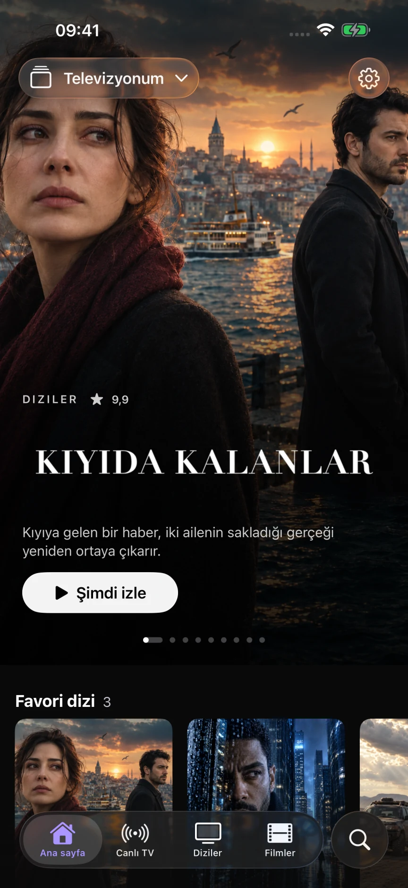
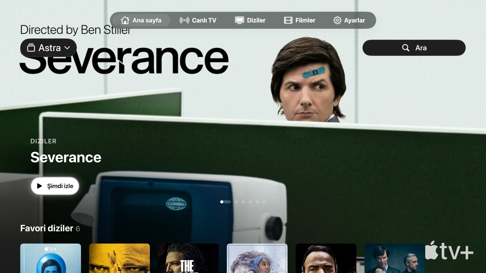
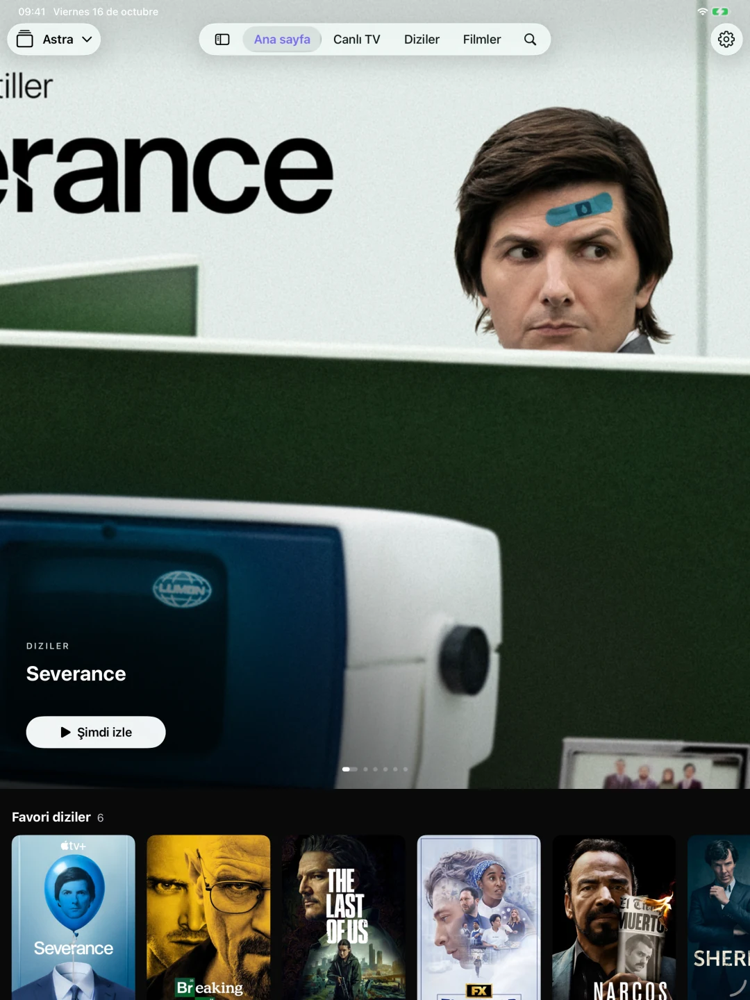

Bağlantılı listeleriniz
Bir M3U/M3U8 URL'si veya Xtream bağlantısı ekleyin. Listeler arasında geçiş yapın; her kataloğu, favorileri ve geçmişi ayrı tutun. Ayrıca iPhone ve iPad'de M3U dosyalarını da içe aktarabilirsiniz.
Ekranlarınız için tasarlandı
Kendi oynatma listeleriniz, Astra tarafından reklam gösterilmeyen ücretsiz bir oynatıcıda. M3U veya Xtream bağlantısıyla kanallarınızı, filmlerinizi ve dizilerinizi iPhone, iPad ve Apple TV’de izleyin.
Kendi çalma listenizi kullanın. Henüz App Store'da mevcut değil. Lansman bildirim e-postasının gönderilip gönderilmeyeceğine siz karar verirsiniz.

Her şey yerli yerinde
İçeriğinize yer açan bir kütüphane. Listeleriniz, favorileriniz ve izleme ilerlemeniz; her ekranda doğal hissettiren kontrollerle.
Bir M3U/M3U8 URL'si veya Xtream bağlantısı ekleyin. Listeler arasında geçiş yapın; her kataloğu, favorileri ve geçmişi ayrı tutun. Ayrıca iPhone ve iPad'de M3U dosyalarını da içe aktarabilirsiniz.
Kanallara göz atın, neler yayınlandığını görün ve XMLTV program rehberini inceleyin. Favori kanallarınızı elinizin altında tutun.
Filmleri ve dizileri keşfedin, bir bölüm seçin ve izlemeye kaldığınız yerden devam edin. Kaynak tarafından sağlandığı durumlarda ses ve altyazı seçenekleri mevcuttur.
Tek bir uygulama. Tüm ekranlarınızda.
iPhone'da sekmeler, iPad'de kenar çubuğu ve Apple TV kumandası için özel olarak tasarlanmış kontroller. Uyumlu listeler, favoriler ve izleme ilerlemesi, kişisel iCloud hesabınız üzerinden senkronize edilebilir.


Sistem ve format desteği olduğunda, AirPlay ve Resim İçinde Resim (PiP) özellikleri yerel oynatıcıyı kullanır. Yerel olarak içe aktarılan dosyalar, Apple TV'ye oynatılabilir dosyalar olarak aktarılmaz.
iPhone, iPad ve Apple TV için genel kullanıma sunulma hazırlıkları devam ediyor. Astra henüz App Store'da mevcut değil. E-posta yoluyla kullanıma sunulma bildirimi talep edebilirsiniz.
Hayır. Astra; kanal, film, dizi, oynatma listesi veya TV aboneliği satmaz ya da sağlamaz. Kullanım iznine sahip olduğunuz bir kaynağı kendiniz sağlamalısınız.
Kütüphaneniz cihazınızda kalır. Uyumlu veriler, kişisel iCloud veritabanınız üzerinden senkronize edilebilir. Kullanım istatistikleri ve çökme raporları isteğe bağlıdır; başlangıçta devre dışıdır ve Ayarlar bölümünden ayrı ayrı yönetilebilir.
Bu web sitesinde analiz araçları, reklamlar, formlar veya siteye özgü çerezler bulunmaz. Site GitHub Pages üzerinde barındırılmaktadır ve GitHub, kendi gizlilik bildirimi uyarınca teknik ziyaret bilgilerini kaydedebilir.
Juan Cazalla Estrella tarafından geliştirilmiştir.